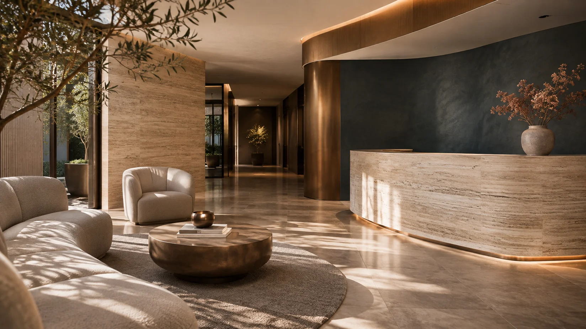
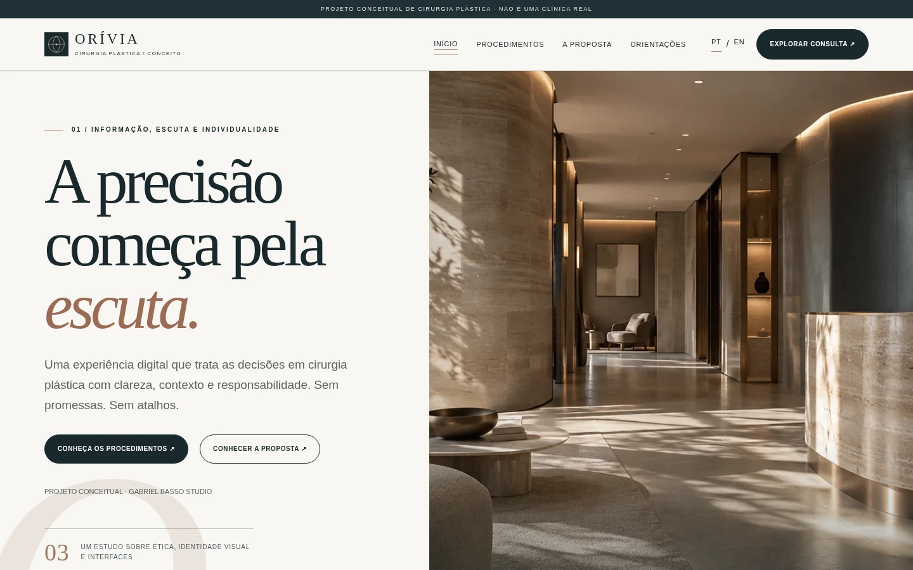
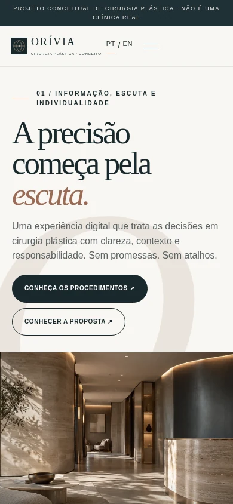

Texto antes da promessa
Cada procedimento traz objetivo geral, limites, possíveis riscos e recuperação.
Estudo de caso / 03 — 04
Saúde · Arquitetura da informação
Discrição visual. Informação em primeiro lugar.
Uma experiência institucional conceitual de cirurgia plástica, planejada para apresentar temas médicos com cuidado e clareza.

Assuntos cirúrgicos exigem informação acessível, limites claros e espaço para uma avaliação individual. A proposta prioriza orientação e navegação objetiva, evitando linguagem persuasiva excessiva e imagens de supostos resultados.
Pessoas que procuram informações introdutórias sobre procedimentos e o funcionamento de uma consulta de avaliação.
Identidade, seis conteúdos de procedimentos, perguntas frequentes e solicitação demonstrativa de consulta.
Web Design / UI/UX / Direção de arte
O sistema visual usa grafite azulado, bronze suave e muita área de respiro. A fotografia conceitual de arquitetura reforça a atmosfera de discrição sem construir uma falsa narrativa de pacientes ou resultados clínicos.
Grafite, bronze e cinza mineral criam uma linguagem institucional sóbria, com contraste e ritmo de leitura.

01 — Direção visualCada procedimento traz objetivo geral, limites, possíveis riscos e recuperação.
A interface diferencia conteúdos educativos, perguntas frequentes e solicitação de consulta.
A simulação solicita apenas dados básicos; não recebe históricos médicos ou fotografias.
Acessar os temas e a visão geral do atendimento.
Ler indicações gerais, riscos, limitações e dúvidas.
Selecionar assunto, data e horário fictícios.
Revisar a solicitação com aviso de demonstração.
As capturas revelam a versão implementada em desktop e celular, com navegação e informação educativa como protagonistas.


Uma experiência institucional conceitual de cirurgia plástica, planejada para apresentar temas médicos com cuidado e clareza.
Explorar a experiênciaPáginas com explicações gerais, limitações e riscos.
Conteúdo acessível organizado por tema.
Calendário e revisão sem reserva real.
O formulário demonstrativo não solicita dados de saúde sensíveis.
A ORÍVIA funciona como um exercício de arquitetura da informação para um setor delicado. Não representa profissional habilitado, instalações reais ou consultas efetivamente agendadas.
Sobre as imagens. As imagens de arquitetura são ilustrativas; não retratam um consultório médico real.
Próximo projeto / 04 — 04
NÓRRIA